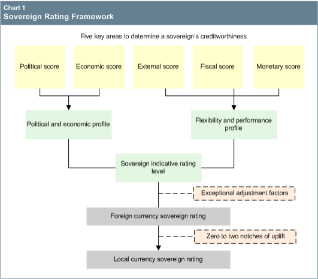

- Institutional effectiveness and political risks, reflected in the political score.
- Economic structure and growth prospects, reflected in the economic score
- External liquidity and international investment position, reflected in the external score.
- Fiscal performance and flexibility, as well as debt burden, reflected in the fiscal score.
- Monetary flexibility, reflected in the monetary score.
